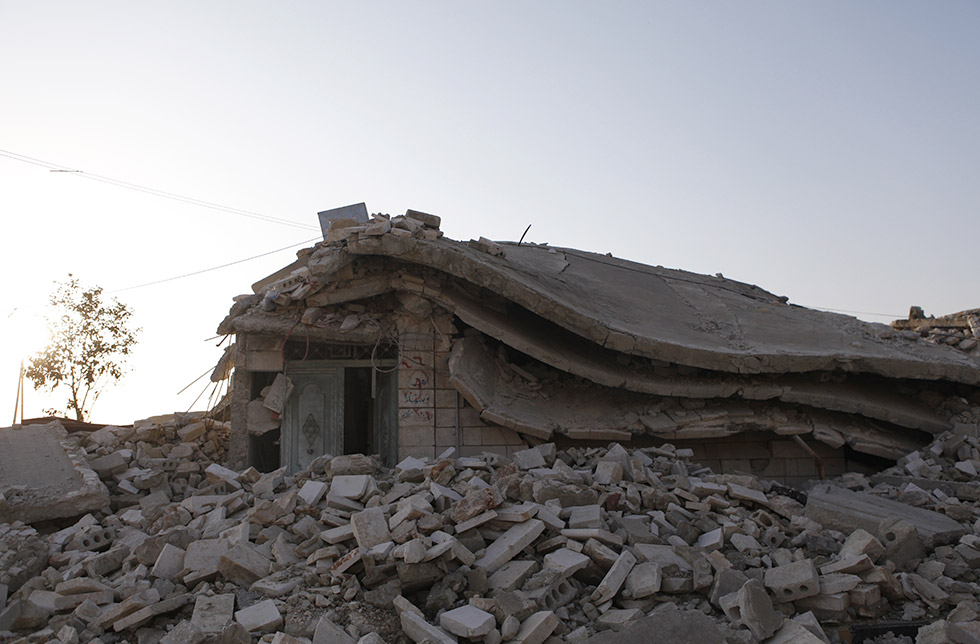

Tweeter
MENU
choisir une séquence
Antakya: la base arrière des cyber-soldats
"Satellite city"
La caméra pour arme
À l'oeuvre en Syrie
Les soutiens étrangers
La bataille des écoutes
CARTE
Internet verrouillé
Crédits
Adapté
d'un grand reportage RFI
de Joan Tilouine
Conception interactive
Agnès Krempp
Emmanuelle Nicolas
Lydia Berroyer
Création graphique et développement
Emmanuelle Nicolas
Marine Tanguy
Photographies
Joan Tilouine
Shaam News Network
Lens of Free Syrian Soldier
Remerciements
Laurent Balleyguier
Raphael Massi
Muhamad R
À l'oeuvre en Syrie

Play
Pause
/